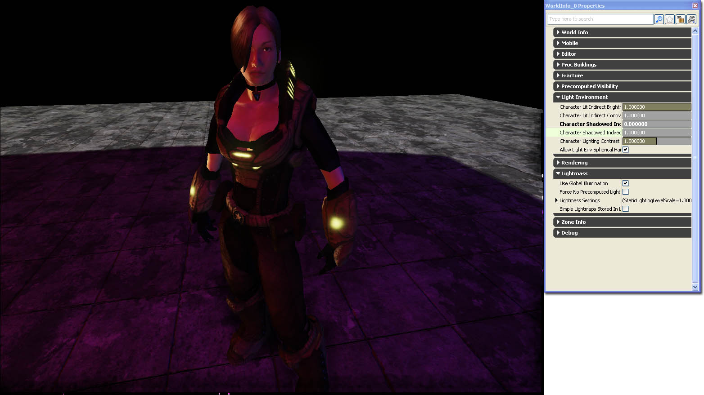

UDN
Search public documentation:
DevelopmentKitGemsCharacterLighting
日本語訳
中国翻译
한국어
Interested in the Unreal Engine?
Visit the Unreal Technology site.
Looking for jobs and company info?
Check out the Epic games site.
Questions about support via UDN?
Contact the UDN Staff
中国翻译
한국어
Interested in the Unreal Engine?
Visit the Unreal Technology site.
Looking for jobs and company info?
Check out the Epic games site.
Questions about support via UDN?
Contact the UDN Staff
UE3 Home > Unreal Development Kit Gems > Character Lighting
UE3 Home > Lighting & Shadows > Character Lighting
UE3 Home > Character Artist > Character Lighting
UE3 Home > Lighting Artist > Character Lighting
UE3 Home > Lighting & Shadows > Character Lighting
UE3 Home > Character Artist > Character Lighting
UE3 Home > Lighting Artist > Character Lighting
Character Lighting
Last tested against UDK Jan, 2011
PC compatible
Overview
Tweaking Skeletal Mesh Component
Related topics
Material Tweaking
Adding detail normal maps
Adding detail normal maps is a simple way to start improving the quality at the sub pixel level. Normal maps will always have a resolution and the light calculations depend on this resolution. If the player moves closer to the material it is possible that the normal maps are filtered linearly. This can result in poor lighting. Detail normal maps help to alleviate this issue. Adding a detail normal map is done as follows. Scale the detail normal texture by a factor, usually a factor of 10 - 15 works well. Multiply the detail normal by a vector which nulls out the blue channel [Constant(1, 1, 0)]. Then multiply this with a factor to adjust how deep the detail normal map is. Finally, add the results of all of this to your normal map. In this screen shot, the material used on the character does not have detail normal maps. In this screen shot, the material has detail normal maps added to it. Here we see refined lighting on some areas of the armor and a small amount on skin surfaces.Adding fresnel maps
A fresnel map helps to add indirect rim lighting to the character. Indirect lighting is an important aspect to skin shading given that skin rendering often employs sub surface scattering. One aspect of sub surface scattering is that the rims of objects tend to be lit ever so slightly. Adding a Fresnel map is done by multiplying the results of a Fresnel with a Fresnel map. The Fresnel normal is the normal map that you use for the character. The Fresnel map is simply what color to use, so you could also multiply this with a vector parameter to produce colored Fresnel lighting. In this case, the Fresnel map is a gray scale version of the diffuse. In this screen shot, the material does not have a Fresnel maps. In this screen shot, the material has Fresnel maps added to it. As you can see, an artificial rim lighting has been achieved. This gives the skin a shinier almost oilier appearance. It also gives the appearance of more volume to the mesh by adding a highlight to compliment the shadow.Related topics
Custom Lighting
It is also possible to implement your own lighting on your character materials to produce a very different result. This material uses sub surface scattering developed by Miguel A Santiago Jr. based on nVidia's research on sub surface scattering. This is the material created for this which implements aspects of sub surface scattering and portions of the standard Unreal Tournament 3 character material. Click on the thuumbnail to see the entire material layout. In this screen shot, the standard Unreal Tournament 3 character material is used. In this screen shot, the new sub surface scattering enabled material is used.Dynamic Light Environment Tweaking
Use Boolean Environment Shadowing
Turning this off improves the shadowing quality but at a performance cost. When this is turned on, it will use cheap shadowing from the environment. In this screen shot, the skeletal mesh component's light environment has boolean environment shadowing turned on.
In this screen shot, the skeletal mesh component's light environment has boolean environment shadowing turned off. Shadows are more well defined and are more accurate.
In this screen shot, the skeletal mesh component's light environment has boolean environment shadowing turned on.
In this screen shot, the skeletal mesh component's light environment has boolean environment shadowing turned off. Shadows are more well defined and are more accurate.
Synthesize SH Light
Turning this on will synthesize a spherical harmonical light for all lights not accounted by the synthesized directional light, producing better lighting results at a cost to performance. In this screen shot, the skeletal mesh component's light environment has synthesize SHLight turned off. Lighting is not too bad. Unfortunately, the red and blue lights within the scene are merged together; which is incorrect. In this screen shot, the skeletal mesh component's light environment has synthesize SHLight turned on. The red and blue lights within the scene produce distinct lighting on the character.Related topics
World Info Character Light Environment Tweaking
Character Lit Indirect Brightness
This increases or decreases the indirect lighting of character light environments that have been lit by any dominant lights. Use this if you want to increase or decrease the overall brightness of the character uniformly.Character Lit Indirect Contrast Factor
This increases or decreases the indirect lighting contrast of character light environments that have been lit by any dominant lights. Use this if you want to increase the brighter areas by this factor and decrease the darker areas by this factor. It helps to bring out the overall volume and shape of the character.Character Shadowed Indirect Brightness
This increases or decreases the indirect lighting of character light environments that are currently shadowed by all dominant lights. Use this if you want to increase the overall brightness of characters in shadows uniformly. This can be useful if characters become too dark within shadows. Character Shadowed Indirect Contrast Factor
This increases or decreases the indirect lighting contrast of character light environments that are currently shadowed by all dominant lights. Use this if you want to increase the brighter areas by this factor and decrease the darker areas by this factor. It helps to bring out the overall volume and shape of the character. This can be useful if characters feel flat when they go dark within shadows.Allow Light Env Spherical Harmonic Lights
This is a global boolean which enables or disables the ability for dyanmic light environments to synthesize spherical harmonical lighting. Enable or disable spherical harmonical lighting. In this screen shot, the skeletal mesh component is able to synthesize spherical harmonical lighting. Looks better at the cost of performance. In this screen shot, the skeletal mesh component isn't able to synthesize spherical harmonical lighting. Doesn't look as nice, but performance is better.Overall tweaking
In this screen shot, the world character lighting settings have not been tweaked. In this screen shot, the world character lighting settings have been tweaked and the character seems to have more volume without having to add any new lights into the scene.
In this screen shot, the world character lighting settings have been tweaked and the character seems to have more volume without having to add any new lights into the scene.